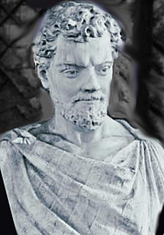
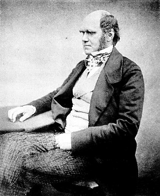

ევოლუცია — ბიოლოგიური პოპულაციების მემკვიდრეობითი ნიშან-თვისებების ცვალებადობა მომდევნო თაობებში. ეს ნიშან-თვისებები წარმოადგენს გამოხატვას გენებისა, რომელიც მშობლიდან ნაშიერს რეპროდუქციის შედეგად გადაეცემა. ნებისმიერ მოცემულ პოპულაციაში შესაძლოა, არსებობდეს განსხვავებული თვისებები, რაც შედეგია მუტაციის, გენეტიკური რეკომბინაციის და გენეტიკური ვარიაციების სხვა ფაქტორებისა. ევოლუციას ადგილი აქვს, როცა ევოლუციური პროცესები, როგორიცაა, მაგალითად, ბუნებრივი გადარჩევა (მათ შორის, სქესობრივი გადარჩევა) და გენური დრეიფი მოქმედებენ აღნიშნულ ვარიაციებზე, რაც იწვევს პოპულაციის შიგნით კონკრეტული თვისების გავრცელებას ან გაიშვიათებას. ევოლუციის სწორედ ამ პროცესმა წარმოშვა ბიომრავალფეროვნება ბიოლოგიური ორგანიზმების ყველა დონეზე, სახეობის, ინდივიდუალური ორგანიზმებისა და მოლეკულების ჩათვლით.

მეცნიერული თეორია ევოლუციის შესახებ ბუნებრივი გადარჩევის გზით დამოუკიდებლად შეიმუშავეს ჩარლზ დარვინმა და ალფრედ რასელ უოლესმა XIX საუკუნის შუა წლებში. იგი დეტალურად პირველად იქნა გადმოცემული დარვინის წიგნში „სახეობათა წარმოშობის შესახებ“ (On the Origin of Species).[24] ბუნებრივი გადარჩევის გზით ევოლუციის პირველ დემონსტრირებას წარმოადგენდა დაკვირვება, რომ წარმოიქმნება შთამომავლობის იმაზე მეტი რაოდენობა, ვიდრე მათი გადარჩენაა შესაძლებელი. იგი ასევე მოიცავს სამ დაკვირვებად ფაქტს ცოცხალი ორგანიზმების შესახებ: 1) ინდივიდები განსხვავდებიან მორფოლოგიური, ფიზიოლოგიური და ქცევითი თვისებებით (ფენოტიპური ვარიაციები); 2) განსხვავებული თვისებები ინდივიდის გადარჩენის და რეპროდუქციის განსხვავებულ შანსებს უზრუნველყოფს (დიფერენციალური შემგუებლობა) და 3 თვისებები შეიძლება თაობიდან თაობას გადაეცეს (შემგუებლობის მემკვიდრეობითობა).[25] აქედან გამომდინარე, შემდგომ თაობებში პოპულაციის წევრები ჩანაცვლებულნი იქნებიან იმ მშობლების შთამომავლებით, რომელთაც გააჩნიათ უფრო ხელსაყრელი თვისებები, რათა გადარჩნენ და გამრავლდნენ იმ ბიოფიზიკურ გარემოში, სადაც ბუნებრივი გადარჩევა მიმდინარეობს.
მეოცე საუკუნის ადრეულ პერიოდში თანამედროვე ევოლუციურმა სინთეზმა გააერთიანა კლასიკური გენეტიკა და დარვინის ევოლუციის თეორია (ბუნებრივი გადარჩევის გზით) პოპულაციური გენეტიკის დარგში. ბუნებრივი გადარჩევის, როგორც ევოლუციის გამომწვევის მნიშვნელობა, ბიოლოგიის სხვა დარგებმაც აღიარეს. უფრო მეტიც, ადრეული შეხედულებები ევოლუციაზე, როგორებიცაა ორთოგენეზი, ევოლუციონიზმი და სხვა მოსაზრებები ევოლუციის თანდაყოლილ „პროგრესულობაზე“, მოძველებულ მეცნიერულ თეორიებად იქცნენ.[27] მეცნიერები აგრძელებენ ევოლუციური ბიოლოგიის სხვადასხვა ასპექტების შესწავლას ჰიპოთეზების ფორმირებებითა და ტესტირებებით, თეორიული ბიოლოგიისა და ბიოლოგიური თეორიების მათემატიკური მოდელების აგებით, დაკვირვებით მიღებული მონაცემების გამოყენებით და საველე პირობებსა და ლაბორატორიაში შესრულებული ექსპერიმენტებით.
მოსაზრება, რომ ორგანიზმის ერთი ტიპი შესაძლოა მეორისგან წარმოიშვას, ჯერ კიდევ ზოგიერთ სოკრატემდელ ძველ ბერძენ ფილოსოფოსთან გვხვდება, მაგალითად ანაქსიმანდრესთან და ემპედოკლესთან.[34] მსგავსი მოსაზრებები რომაულ ხანაშიც გადარჩა. პოეტმა და ფილოსოფოსმა ლუკრეციუსმა ემპედოკლეს იდეები გააჟღერა თავის შედევრში De rerum natura (საგანთა ბუნების შესახებ).[35][36]
ამ მატერიალისტური ხედვებისგან განსხვავებით, არისტოტელეს აზრით, არა მხოლოდ ცოცხალი საგნები, არამედ ყველა ბუნებრივი საგანი განსხვავებული ბუნებრივი შესაძლებლობების არასრული განხორციელებაა, რასაც ის „ფორმებს“, „იდეებს“ ან „სახეობებს“ უწოდებდა.[37][38] ეს იყო ბუნების ტელეოლოგიური გაგების ნაწილი, რომელშიც ყველა საგანს კონკრეტული როლი ჰქონდა ღვთაებრივ კოსმოსურ წესრიგში. ამ მოსაზრების ვარიაციები შუა საუკუნეებში სტანდარტულ აღქმად იქცა და ქრისტიანულ სწავლებას შეერწყა. თუმცა, არისტოტელე არ თვლიდა, რომ ორგანიზმის რეალური ტიპები ყოველთვის ერთი-ერთზე შეესაბამებოდა მათ მეტაფიზიკურ ფორმებს და გვაძლევდა იმის მაგალითებს, თუ როგორ ჩნდებოდნენ ცოცხალი საგნების ახალი ტიპები.[39]

XVII საუკუნეში, თანამედროვე მეცნიერების ახალმა მეთოდმა არისტოტელეს მიდგომა უარყო. იგი ბუნებრივი ფენომენის ახსნას ფიზიკის კანონების მიხედვით ცდილობდა, რომლებიც საერთო იყო ყველა ხილული საგნისთვის და არ მოითხოვდა არანაირ წინასწარ განსაზღვრულ ბუნებრივ კატეგორიებს ან ღვთაებრივი კოსმოსური წესრიგის არსებობას. მიუხედავად ამისა, ამ ახალმა მიდგომამ ძალიან ნელა გაიდგა ფესვები ბიოლოგიურ მეცნიერებაში, რომელიც წინასწარ განსაზღვრული ბუნებრივი ტიპების კონცეფციის უკანასკნელ თავშესაფრად რჩებოდა. ინგლისელმა ნატურალისტმა ჯონ რეიმ მცენარეთა და ცხოველთა ტიპებისთვის გამოიყენა მანამდე წინასწარ განსაზღრული ბუნებრივი ტიპებისათვის შერჩეული ტერმინი „სახეობები“; მან მკაცრად მოახდინა თითოეული ცოცხალი საგნის იდენტიფიცირება სახეობად და წამოაყენა მოსაზრება, რომ თითოეული სახეობა შესაძლოა განსაზღვრული იყოს იმ მახასიათებლებით, რომლებიც თავისით გადაეცა თაობიდან თაობას
ბიოლოგიაში მუდმივი ტიპოლოგიური კლასების ან ტიპების კონცეფციის უკუგდება ბუნებრივი გადარჩევის გზით წარმართულ ევოლუციის თეორიის გაჩენასთან ერთად გახდა შესაძლებელი, რომელიც ჩარლზ დარვინმა შეიმუშავა. ნაწილობრივ თომას რობერტ მალთუსის ნაშრომით, „ესე პოპულაციების პრინციპების შესახებ“ (1798), შთაგონებულმა დარვინმა აღნიშნა, რომ პოპულაციის ზრდა გამოიწვევდა „არსებობისთვის ბრძოლას“, რომელშიც ხელსაყრელი ვარიანტები გავრცელდებოდნენ, დანარჩენები კი გაქრებოდნენ. ყოველ თაობაში, შეზღუდული რესურსების გამო, მრავალი შთამომავალი რეპროდუქციულ ასაკამდეც ვერ მიაღწევდა. ამ მოსაზრებას შეეძლო აეხსნა, რომ მცენარეთა და ცხოველთა ყველა სახეობა ერთი საერთო წინაპრისგან მოდიოდა, ბუნების შესაბამისი კანონების ორგანიზმის ყველა ტიპისთვის ერთნაირად მოქმედების გზით.[51][52][53][54] 1838 წელს დარვინმა „ბუნებრივი გადარჩევის“ თეორიის შემუშავება დაიწყო. ამ თემაზე მისი „დიდი წიგნის“ წერისას, 1858 წელს ინგლისელმა ბუნებისმეტყველმა ალფრედ რასელ უოლესმა დარვინს პრაქტიკულად იგივე თეორიის თავისი ვერსია გაუგზავნა. თავიანთი დამოუკიდებელი ნაშრომები 1858 წელს ლონდონის ლინეს სამეცნიერო საზოგადოების შეხვედრაზე ერთობლივად წარმოადგინეს.[55] 1859 წლის მიწურულს დარვინმა გამოაქვეყნა „სახეობათა წარმოშობის“ აბსტრაქტი, რომელიც დეტალურად ხსნიდა ბუნებრივ გადარჩევას ისე, რომ ამან ევოლუციის კონცეფციას მზარდი ფართო აღიარება მოუტანა.
ევოლუცია ორგანიზმებში ხდება მემკვიდრული თვისებების — ორგანიზმის მემკვიდრეობით გადაცემული მახასიათებლების ცვლილებით. მაგალითად, ადამიანებში თვალის ფერი არის მემკვიდრეობით გადაცემული მახასიათებელი და ინდივიდს შესაძლოა გადაეცეს „ყავისფერი თვალის თვისება“ ერთ-ერთი მშობლისგან.[69] მემკვიდრეობით გადაცემული თვისებები კონტროლდება გენებით და გენების სრულ კომპლექტს ორგანიზმის გენომში (გენეტიკური მასალა) ეწოდება მისი გენოტიპი.[70]
ხილული თვისებების სრულ კომპლექტს, რომელიც მოიცავს ორგანიზმის ქცევასა და აგებულებას, ფენოტიპი ეწოდება. ეს თვისებები მისი გენოტიპის გარემოსთან ურთიერთქმედებიდან გამომდინარეობს.[71] შედეგად, ორგანიზმის ფენოტიპის მრავალი ასპექტი არ არის მემკვიდრეობით გადაცემული. მაგალითად, გარუჯული კანი გამოწვეულია ადამიანის გენოტიპის ურთიერთქმედებით მზის შუქთან. აქედან გამომდინარე, რუჯი არ გადაეცემა შვილებს. თუმცა, ზოგიერთი ადამიანი უფრო ადვილად ირუჯება, ვიდრე სხვები, გენოტიპურ ვარიაციებში სხვადასხვაობის გამო. ყველაზე კარგი მაგალითი არის ხალხი მემკვიდრეობით მიღებული ალბინიზმით, რომლებიც საერთოდ არ ირუჯებიან და ძალიან მგრძნობიარენი არიან მზის დამწვრობის მიმართ.[72]
მემკვიდრეობითი თვისებები ერთი თაობიდან მეორეში გადაიცემა დნმ-ის საშუალებით — მოლეკულა, რომელშიც კოდირებულია გენეტიკური ინფორმაცია.[70] დნმ გრძელი ბიოპოლიმერია, რომელიც ოთხი ტიპის ფუძისგან შედგება. ფუძეების მიმდევრობა კონკრეტულ დნმ-ის მოლეკულაში აკოდირებს გენეტიკურ ინფორმაციას, მსგავსად ასოების მიმდევრობისა, რომელიც ადგენს წინადადებას. სანამ უჯრედი გაიყოფა, ხდება დნმ-ის კოპირება, ამიტომ, შედეგად მიღებული ორი უჯრედიდან თითოეული მემკვიდრეობით მიიღებს დნმ-ის მიმდევრობას. დნმ-ის მოლეკულის ნაწილს, რომელიც განსაზღვრავს ერთ ფუნქციონალურ ერთეულს, გენი ეწოდება. განსხვავებულ გენებს ფუძეების განსხვავებული მიმდევრობა აქვთ. უჯრედებში დნმ-ის გრძელი ხვეულები წარმოქმნის შეკრულ სტრუქტურებს, რომლებსაც ქრომოსომები ეწოდება. დნმ-ის მიმდევრობის სპეციფიკურ მდებარეობას ქრომოსომაში ლოკუსი ეწოდება. თუ დნმ-ის მიმდევრობა ლოკუსში განსხვავდება ინდივიდებს შორის, ამ მიმდევრობის განსხვავებულ ფორმებს ალელები ეწოდება. დნმ-ის მიმდევრობა შეიძლება მუტაციებით შეიცვალოს, რის შედეგადაც ახალი ალელები წარმოიქმნება. თუ გენში ადგილი ექნება მუტაციას, ახალმა ალელმა შესაძლოა გენის მიერ კონტროლირებად თვისებაზე იქონიოს გავლენა, რის შედეგადაც შეიცვლება ორგანიზმის ფენოტიპი.[73] თუმცა, მართალია, ეს მარტივი შესაბამისობა ალელსა და თვისებას შორის მუშაობს ზოგ შემთხვევაში, მაგრამ თვისებათა უმეტესობა ბევრად უფრო კომპლექსურია და კონტროლდება რაოდენობითი თვისების ლოკუსებით (მრავალი ურთიერთმოქმედი გენი).[74][75]